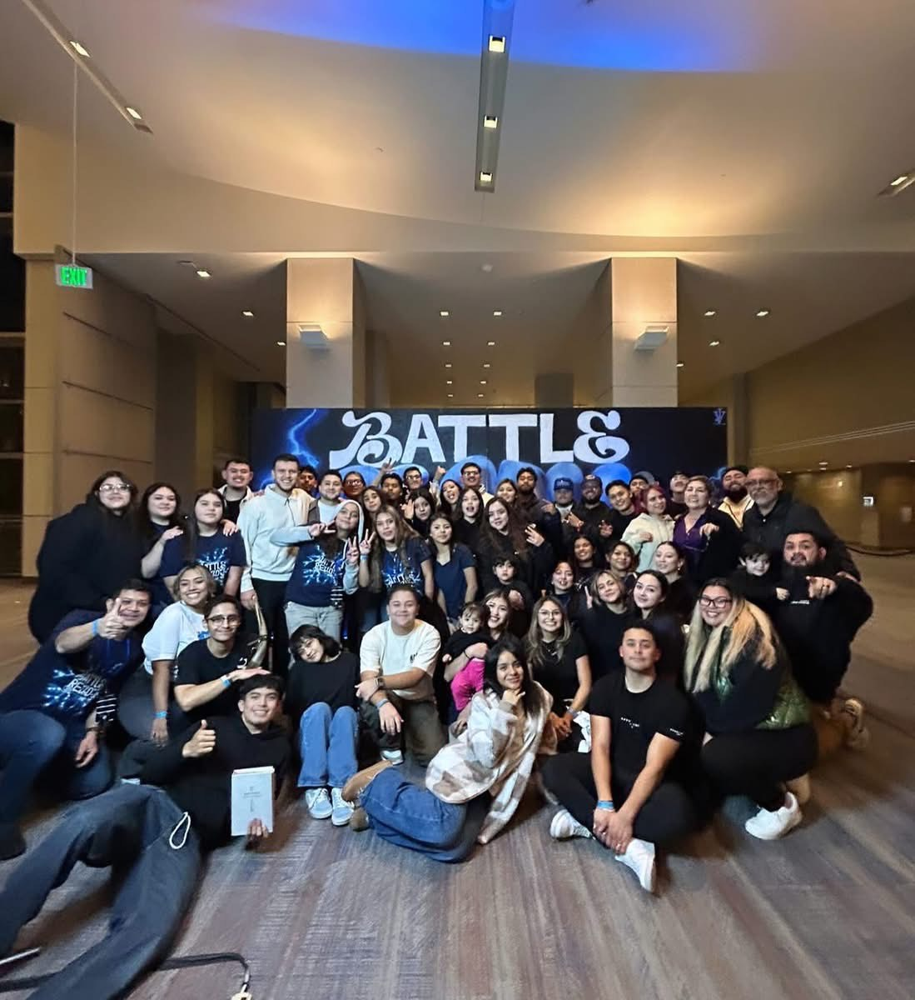

I am Hispnaic American. I was born in Colorado and have been living in denver for 18 years. I was raised at a pentacotal christian church, and have been a christian my whole life.i currently go to nueva esperanza. I have 4 siblings 3 sisters and 1 brother i am the second to last youngest. The first church i attended was a church called Templo Getsemani and i was practically raised their. Ever since i have not looked back. I was 14 when i first got baptized and i have experienced the holy spirit. I've gotten to witness miracles and crazy things happen in my life and other peoples lives. I will always be grateful for my parents and the way they raised me into the right path.
